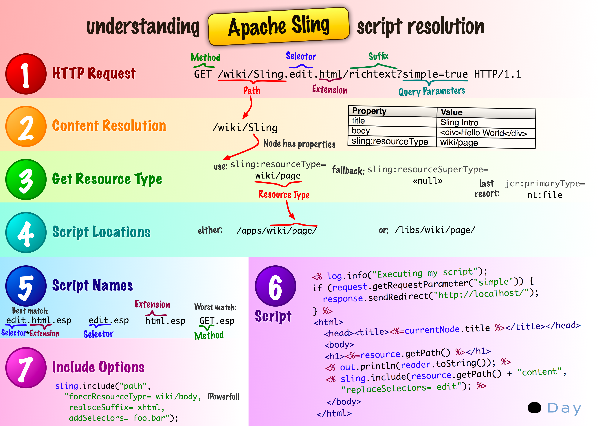

What Is Adobe CQ?
For the Excutive
"Adobe® CQ is the foundation of the Adobe Experience Manager solution. It provides digital marketers with easy-to-use, web-based applications for creating, managing, and delivering personalized online experiences. Adobe CQ provides out-of-the-box integration with other products in Adobe Marketing Cloud."
For the Engineer
It's an extremely powerful Content Management System (CMS) built on major Java standards and solid open-source technologies, especially from the Apache Software Foundation (ASF)
CQ's "value-added" over the open-source software is Adobe's marketing pixie-dust and integration with the rest of their marketing suite (such as analytics and image management)
A Little History
Day Software
Adobe aquired Day Software in 2010, aquiring both their products and people
Communiqué
Day's primary product was Communiqué (a.k.a. "CQ") with customers such as McDonald's, Avanza and Daimler
Roy Fielding
Probably the most famous geek at Day was Roy Fielding:
co-founder of the Apache HTTP Server project, former chair and board member of the ASF, and "inventor" of REST
He was Day's Chief Scientist and became Principal Scientist at Adobe
Basics
Basic Server Architecture
Content Progression
Very High Level Runtime Architecture
Java Content Repository
"Content Repository API for Java (JCR) is a specification for a Java platform application programming interface (API) to access content repositories in a uniform manner. The content repositories are used in content management systems to keep the content data and also the metadata used in content management systems (CMS) such as versioning metadata. The specification was developed under the Java Community Process as JSR-170 (Version 1) and as JSR-283 (version 2). The main Java package is javax.jcr."
In other words, it's a hybrid between a filesystem and a database
Or, to put it another way:
A NoSql DB specification optimized for the kinds of things web sites do (such as large binaries and "unstructured" content)
It is very much a specification:
There are a number of implementations based on specific needs
Everything Is Content
- HTML
- CSS
- JSPs
- Servlets
- Images
- Videos
- OSGi Bundles (i.e., code)
- etc.
Apache Sling
Apache Sling in a hundred words
"Apache Sling is a web framework that uses a Java Content Repository, such as Apache Jackrabbit, to store and manage content.
Sling applications use either scripts or Java servlets, selected based on simple name conventions, to process HTTP requests in a RESTful way...
... The embedded Apache Felix OSGi framework and console provide a dynamic runtime environment, where code and content bundles can be loaded, unloaded and reconfigured at runtime.
As the first web framework dedicated to JSR-170 Java Content Repositories, Sling makes it very simple to implement simple applications, while providing an enterprise-level framework for more complex applications."
(from Sling's Homepage)
Apache Sling in five bullets points
- REST based web framework
- Content-driven, using a JCR content repository
- Powered by OSGi
- Scripting inside, multiple languages (JSP, server-side javascript, Scala, etc.)
- Apache Open Source project
(from Sling's Homepage)


OSGi
Official Definition
OSGi technology is the dynamic module system for Java™. The OSGi Service Platform provides functionality to Java that makes Java the premier environment for software integration and thus for development. Java provides the portability that is required to support products on many different platforms. The OSGi technology provides the standardized primitives that allow applications to be constructed from small, reusable and collaborative components. These components can be composed into an application and deployed.
The OSGi Service Platform provides the functions to change the composition dynamically on the device of a variety of networks, without requiring restarts. To minimize the coupling, as well as make these couplings managed, the OSGi technology provides a service-oriented architecture that enables these components to dynamically discover each other for collaboration. The OSGi Alliance has developed many standard component interfaces for common functions like HTTP servers, configuration, logging, security, user administration, XML and many more. Plug-compatible implementations of these components can be obtained from different vendors with different optimizations and costs. However, service interfaces can also be developed on a proprietary basis.
tl;dr
It’s a specification
(with several major implementations)
Extremely lightweight
(originally created in 1999 for embedded devices)
All about Modularity
(defined in terms of "bundles" and "services")
Services use the publish/find/bind model
(usually based on interfaces, but can be much more)
Full lifecycle support for both bundles and services
(dependency injection, configuration management, etc.)
Fully dynamic
(bundles/services are expected to come and go regularly)
Sane classloaders
(no split packages, explicit version management, fast graph traversal, etc.)